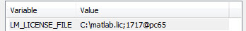

Once the license manager for floating licenses
is invoked, the machines that are on the same network as the server
machine can use it by setting the LM_LICENSE_FILE environment variable.
Procedure
- From your
Windows PC, invoke the Environment Variables dialog box.
In Windows
10:
In the
Start Search text entry field, type ‘env’, then select Edit
the system environment variables. The System Properties
dialog box appears.
In the Advanced tab of the System
Properties dialog box, click the Environment Variables button.
- If LM_LICENSE
FILE does not exist, click New and set the
value to <port_number>@<host_name> (for
example, 1717@pc65).
If LM_LICENSE_FILE exists, then append the Calibre
DefectReview license path using a semicolon. For example, if LM_LICENSE_FILE
is already set to the path C:\matlab.lic, then
the Calibre DefectReview license path can be appended as shown in
the following figure:
Figure 1. Appending
to LM_LICENSE_FILE